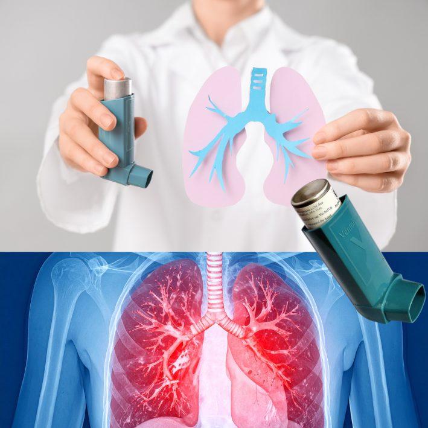

Managing Asthma in a Tropical Climate
Common triggers include dust, pollen, smoke, cold air, respiratory infections, and strong odours — and in a tropical climate like Mauritius, humidity, mould, and dust mites are particularly common culprits.
Common triggers in a tropical climate
- High humidity, which encourages mould and dust mite growth indoors
- Dust mites, especially in bedding, curtains, and soft furnishings
- Smoke, from cooking fires, cigarettes, or seasonal sugarcane burning
- Strong odours and aerosols, including cleaning products and perfumes
- Respiratory infections, which are common triggers for flare-ups
Daily habits that help keep asthma under control
Good long-term management combines a few things: taking your prescribed preventive inhaler daily as directed — even when you feel well — reducing indoor humidity where possible, washing bedding in hot water weekly to reduce dust mites, avoiding outdoor activity when pollen or dust counts are high, and always keeping your rescue inhaler on hand.
Why regular check-ups matter
Asthma control isn't something to set once and forget. Triggers can change with the seasons, living situation, or even age, and what worked well a year ago may not be enough now. Regular check-ups let your treatment plan adjust as needed, rather than staying static for years while symptoms quietly get worse. If you're using your rescue inhaler more than a couple of times a week, that's usually a sign it's time to review your plan.
Have a question about your own symptoms? Message directly and ask.
Message on WhatsAppThis article is general health information and does not replace a medical consultation. In a medical emergency, call SAMU (114) or go to your nearest hospital.